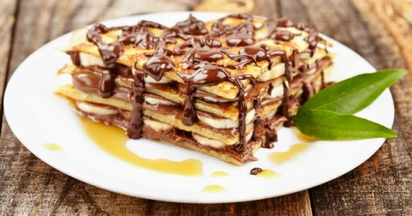

Çikolatalı Krep
Çikolata kaplı krepler, her ısırığında keyif ve neşe taşıyarak gününüzü renklendirecek tatlı bir mola sunuyor. Özellikle güneşli bir günün ardından içinizi ısıtacak olan bu çikolatalı krep, sevgi dolu bir lezzet deneyimiyle tatlı krizlerinizi gideriyor.
Tarif: Emirhan Gültekin

Kaç Kişilik: 4-6
Hazırlanma Süresi: 30 Dakika
Pişirme Süresi: 10 Dakika
Malzemeler
- 1 su bardağı un
- 2 yemek kaşığı kakao
- 1 çay kaşığı kabartma tozu
- 1/4 çay kaşığı tuz
- 1 su bardağı süt
- 1 büyük yumurta
- 2 yemek kaşığı erimiş tereyağı veya sıvı yağ
- Yarım çay kaşığı vanilya özütü veya 1 paket vanilya şekeri
- Üzeri için:
- Çilek dilimleri veya muz dilimleri (isteğe bağlı)
- Pudra şekeri veya çikolata sosu (isteğe bağlı)
Yapılışı
- Geniş bir karıştırma kabında un, kakao, toz şeker, kabartma tozu ve tuzu bir araya getirin.
- Başka bir kapta süt, yumurta, erimiş tereyağı veya sıvı yağ ve vanilyayı çırpın.
- Kuru malzemelerin üzerine sıvı karışımı ekleyin ve pürüzsüz bir hamur elde edene kadar karıştırın.
- Krep tavasını orta ateşte ısıtın ve biraz tereyağı veya yağ ile yağlayın.
- Tavaya bir kepçe dolusu hamur dökün ve yayarak krebi oluşturun. İki tarafını da altın rengi olana kadar pişirin.
- Pişen krepleri servis tabağına alın.
- Üzerine dilerseniz çilek veya muz dilimleri koyabilirsiniz.
- İsteğe bağlı olarak pudra şekeri serperek veya çikolata sosuyla süsleyerek servis yapın.
- Sıcak veya soğuk olarak servis edebilirsiniz.
Afiyet Olsun!